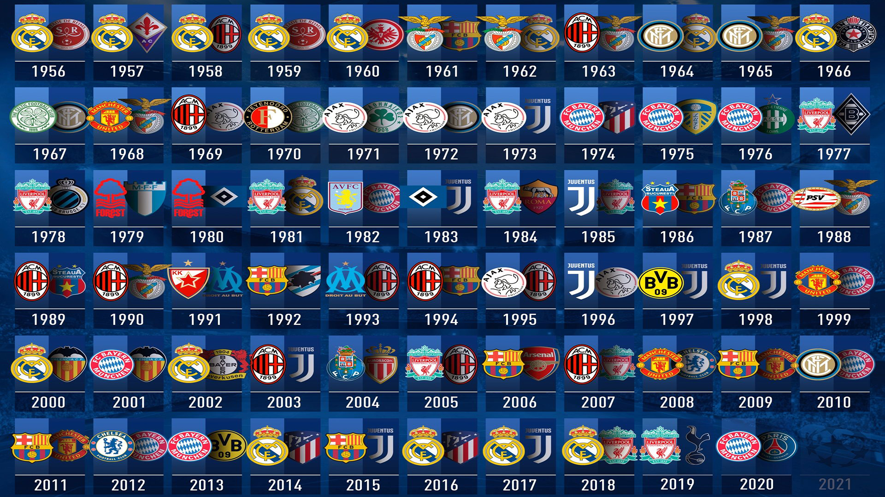

El trofeo tiene un diseño distintivo con asas grandes, lo que le ha valido el apodo de "Las orejonas" debido a su forma. Está hecho de plata y mide 74 cm de altura, pesando alrededor de 11 kg.

El Real Madrid sigue siendo un equipo muy competitivo en la Champions League y sigue añadiendo a su legado con cada temporada. El Real Madrid ha ganado un total de 15 Ligas de Campeones, lo que lo convierte en el equipo más exitoso en la historia de la competición.

El Allianz Arena no solo es un lugar de partidos, sino también una maravilla arquitectónica y un símbolo del fútbol moderno. Aunque es conocido principalmente como la casa del FC Bayern Munich, también ha albergado partidos de la selección alemana y eventos internacionales importantes.

Desde el inicio de la competición en 1955, 24 equipos diferentes han ganado la UEFA Champions League. Cada uno ha tenido la oportunidad de levantar el prestigioso trofeo y de dejar su marca en la historia del fútbol europeo.

Los máximos goleadores de la máxima competición, Cristiano encabeza la lista, seguido por Lionel Messi.

Mientras tanto, en la lista de goleadores por equipo la balanza se inclina del lado de Lionel Messi, llevando a la cima al FC Barcelona, aún por encima del histórico Real Madrid

El himno de la UEFA Champions League es una composición emblemática, titulada simplemente como "Champions League". Fue compuesta por Tony Britten en 1992 y está basada en el "Zadok the Priest" de George Frideric Handel. El himno se canta en los tres idiomas oficiales de la UEFA: inglés, francés y alemán.